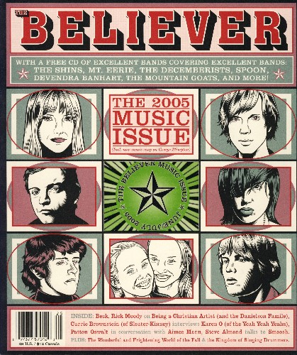

the believer june/july 2005 music issue

title: the believer june/july 2005 music issue
format: CD
- the decemberists: bridges & balloons by joanna newsom
- spoon: decora by yo la tengo
'
- the constantines: why i didn't like august 93 by elevator to Hell
- cocorosie: ohio by damien jurado
- the mountain goats: pet politics by silver jews
- san serac: late blues by ida
- the shins: we will become silhouettes by the postal service
- josephine foster: the golden window by the cherry blossoms
- cynthia g. mason: surprise, az by richard buckner
- jim guthrie: nighttime/anytime (its alright) by the constantines
- espers: firefly refrain by fursaxa
- two gallants: annas sweater by blear
- vetiver: be kind to me by michael hurley
- ida: my fair, my dark by david schickele
- mount eerie: waterfalls by thanksgiving
- devendra banhart: fistful of love by antony & the johnsons
- wolf parade: claxxons lament by frog eyes
please mail any questions/comments/complaints, or just notes hello to:nall@themountaingoats.net